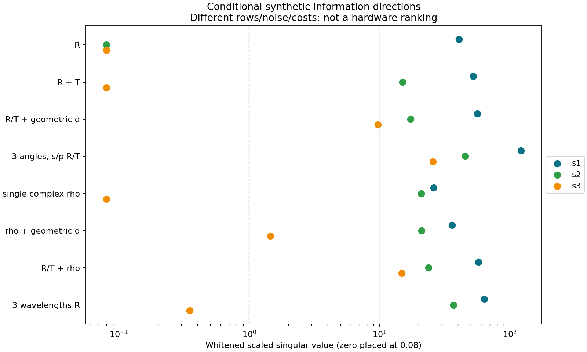
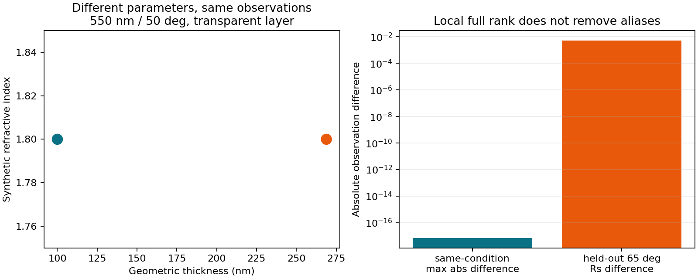

原创图，仅使用已保存的小型合成结果。不同方案的成本/噪声并未归一，不能作仪器排行榜。

原创图，仅使用已保存的小型合成结果。不同方案的成本/噪声并未归一，不能作仪器排行榜。
01 · 从光场到数据：测量算子也是模型的一部分
版本 T07-r2-v0.1.0；证据状态：原创推导与条件性合成计算。用户实际测量硬件未知。本册不将任何候选场景登记为现有仪器能力，不要求提供硬件才能完成理论。
1.1 问题的三层定义
把参数写成 θ（欲识别的有限维物理参数）、η（角度零点、增益、厚度基准等干扰参数）、c（已声明的样品与测量合同）。数据模型为
y = h_c(θ,η) + ε，Cov(ε)=Σ。 (1-1)
h_c不是仅有膜系传输矩阵。它是“材料/几何→复场→能流或偏振→光谱/角度/空间收集→仪器输出坐标”的复合映射。不同c对应不同可辨识问题；把有背面样品与半无限基片核比较，即使找到唯一θ，也可能只得到错误模型中的唯一解。Jellison的原始分析区分光场计算、材料参数化与数据拟合三个步骤，本册进一步把收集几何和统计坐标写成显式合同。[MI-S05，出版者摘要]
在本轮已实现的最小场景中，θ=(n,k,d)，n,k为指定小波段内的合成常数，d以µm计；空气入射、实折射率1.52的半无限基片、各向同性光滑单层。该常数模型只是有限维可审查例，不是Al/SiO2/任意真实材料的色散模型，也不声称全频Kramers–Kronig一致。数据仅为synthetic。真实膜必须通过T04/T06的状态、样品、来源和适用域合同再进入别的前向接口，不能改一个evidence标签便接入本例。
1.2 强度类观测
对给定真空波长λ、外部入射角a、偏振p，光学核给复r、t及功率R、T。已冻结核的T是进入出射半空间的通量；出射基片后方探测器看到的透过率通常不是此量。
若一个仪器读数对应互不相干的谱/角节点，则
y_R = Σ_l w_l R(λ_l,a_l,p)，w_l≥0，Σ_l w_l=1。 (1-2)
这里先算每节点功率再平均；先平均r再取模方会制造不存在的相干交叉项。光谱响应与角度响应被代码写成可分离乘积节点，这是一个明确假设；真实响应若有关联需联合二维节点。权重、带宽尾部、偏振态与有效光斑不能由一个FWHM唯一恢复。任何节点越过材料域均应拒绝。只有已证明s/p强度各占一半时，非偏振R=(Rs+Rp)/2。
R/T观测也必须注明镜面、定向-半球、特定孔径或其他定义。令平面零散射栈R0,T0；示意性的镜面损失为SR,ST，则镜面缺口为
1−Rspec−Tspec = Aabs + SR + ST。
探测到部分散射时，Rdet=Rspec+ηR SR，Tdet=Tspec+ηT ST；unknown η或unknown scatter不等于零。NIST原始积分球方法说明绝对R/T与由其得到的A须受具体几何及仪器误差约束；其装置能力不能移植为用户测量保证。[MI-S06，官方摘要；T06 PO-S05完整继承边界]
1.3 有限背面合同为何不能隐去
T06的有限不相干基片模式在实n端口、独立bulk α、所有走离返回光均收集的条件下，令P=exp(−αL/cos a_s)，D=1−Rb Rrear P²：
Ttot=Tf Trear P/D；Rtot=Rf+Tf Tb Rrear P²/D。 (1-3)
膜吸收、体吸收和背面往返要分别记账。这个近似不代表任意复基片界面的严格相干解，不能在存在楔角、有限孔径漏回光、厚基片条纹、背面镀层、强bulk k或散射反馈时盲用。本轮没有再实现另一份此模式，Contract明确拒绝finite/backside场景；继承的是认识边界，不是把未支持分支伪装为支持。
同介质α=4πk/λ是单位关系，不提供bulk→film的样品状态迁移许可。bulk吸收可约束基片体传播，不可用来填实际膜的k。
1.4 独立几何厚度的观测
理想同位置几何厚度观测为y_d=d+ε_d；其Jacobian多一行(0,0,1)。因此可增加光谱原先没有的方向，但必须有独立溯源与同一被测量定义。设计d、QCM显示d、几何d和光学n(λ)d不能混用。若“独立厚度”其实来自同一椭偏拟合，只是把拟合结果再输入，信息没有增加。
即便截面/台阶等非光学几何测量存在，参考台阶、取样位置、粗糙分布、膜非均匀和厚度偏置仍须归入η。若y_d=d+b且b完全未知，仅增加该数据而无b校准，d与b可以相互补偿，第03章的投影会使独立厚度方向消失。本轮只比较这种条件下的理论价值，不假定用户具备某种厚度仪。
1.5 必要的机器可审查边界
measurement.py拒绝未测/公开转移材料冒充本机校准，拒绝unknown散射、未支持背面、波段越界、缺独立性声明及未知偏振。它可执行R/T的离散功率平均、单射线复椭偏比、独立d及有限节点的偏振相干矩阵诊断。它没有提供实际仪器解调、校准、噪声估计、BRDF、多层材料反演或工艺→n/k映射。本轮理论对这些接口给出需求，并不将需求文件当实现或实测。
02 · 椭偏不是“再加一个相位数字”：基矢、圆周和混合态
2.1 必须一并记录的约定
本项目冻结核采用exp(−iωt)、被动N=n+ik，正向传播exp(+i2πu d/λ)，u=√(N²−β²)，β=n0 sin a。µm/µm消去，一程相位为无量纲弧度；k>0使振幅衰减。若改用exp(+iωt)，材料与所有场/传播公式必须一致共轭，不能只改k符号。
核使用切向电场振幅：q_s=u，q_p=N²/u，r=(q0−q1)/(q0+q1)。在法向两偏振的切向r相同。Byrnes原稿采用另一反射p基矢，并且其§4.2的Δ还另有显式负号；相同物理场可能在不同定义下相差π。[MI-S01，§§2.2、3、4.2、附录A] 因此本册不把任何软件的字符串rp或Delta当作可直接互换的数据。
本册可执行两种自洽定义：
- same_tangential_p：ρ_t=r_p,t/r_s，Δ_t=arg ρ_t
- opposed_reflected_p：入射e_p,i=(cos a,0,−sin a)，反射e_p,r=(−cos a,0,−sin a)，所以r_p,b=−r_p,t；ρ_b=−r_p,t/r_s，Δ_b=arg ρ_b
后者的ρ是该明确基矢下的幅比；它不表示用户仪器必定采用此定义。两者的Ψ=arctan|ρ|相同、Δ差π模2π。若仪器用−ρ或相反时间约定，还须进一步转换。必须把基矢、传播方向、入射面、时间约定及Δ范围一同存档。
2.2 一行就能发现的相位错误
空气到n_s=1.52的法向裸界面：r_s=r_p,t=(1−1.52)/(1+1.52)=−0.2063492063。故ρ_t=+1、ρ_b=−1，对应Ψ=45°，Δ_t=0、Δ_b=π。两者R都约0.04258；所以只查R永远找不到这处符号差异。
对任意各向同性平面栈，在法向且r≠0时也有同样固定比值。因此法向理想椭偏比不提供n,k,d的新方向，虽然反射强度仍可变化。若r=0，比值成为0/0，不能把无信号当成精确相位测量。该极限既是物理结论，又是本轮数值零秩测试。
2.3 选择数据坐标而非制造不连续残差
常用单色非退偏表达为ρ=tanΨ exp(iΔ)。Δ在圆周上；179°与−179°只相差2°。直接相减会给−358°，普通最小二乘将尝试纠正不存在的巨大误差。本轮提供圆周差arg exp[i(Δcalc−Δobs)]，但主要拟合坐标是(Reρ,Imρ)，避免任意相位切口。
换坐标不能任意换误差。令x=tanΨ cosΔ，y=tanΨ sinΔ，角度以弧度计，其局部Jacobian为
H=[[sec²Ψ cosΔ, −tanΨ sinΔ], [sec²Ψ sinΔ, tanΨ cosΔ]]。
Σρ≈H ΣΨΔ Hᵀ。 (2-1)
度输入必须先乘π/180，协方差乘(π/180)²；Ψ和Δ的相关性也保留。代码只在0<Ψ<π/2及正定协方差下作这条局部变换；真实仪器的原始强度似然可能更合适。小噪声近似不能处理宽相位、多峰角度误差或相位不可见点。
r_s接近零时ρ发散，应换图册坐标（例如倒数比）或使用原始Jones/Mueller/解调强度，不靠数值裁剪。r_p=0时ρ=0可代数表示，但Δ无定义；不可认为仪器仍给有限固定相位标准差。复ρ的两个分量只是坐标选择，不是新增两种独立实验。
2.4 有带宽或角度混合时，不能平均ρ或Ψ/Δ
令各节点反射Jones向量j_l=(r_p,b,r_s)ᵀ，相同入射p/s幅度、相同基底、节点之间互不相干，定义
C = Σ_l w_l j_l j_l†。
这是本轮原创的两分量相干矩阵推导：探测强度二次于场，因此应平均j j†，而非平均j再外积，更不是平均r_p/r_s。归一化Stokes坐标用本册明确约定
Q=(Cpp−Css)/S0，U=2Re Cps/S0，V=2Im Cps/S0，S0=Cpp+Css。 (2-2)
单Jones态P=√(Q²+U²+V²)=1；节点混合通常P<1。纯态的3个归一化分量只有2个自由度，若由Ψ/Δ转换而来，其3×3协方差秩≤2；把三项独立加权会虚增信息。真实测得的Mueller数据有自己的校准与相关噪声，不能套用本演示的简化结构。
合成θ=(1.8,0.02,0.1 µm)、a=60°、λ=0.51/0.59 µm各半权的结果P≈0.99930336。轻微偏离纯态已足以说明“两个平均椭偏角”不能总是完整描述输出。这是数学混合示范，不是观察到真实样品退偏。空间非均匀、部分相干、散射偏振转化及方位角变化还需更完整的传播与收集算子。
03 · 雅可比的正确尺度、秩与干扰参数
以下线性代数为本项目从(1-1)自行推导；Σ假定在当前局部固定、已知且正定，参数处于允许域内。若Σ依赖θ，完整Fisher信息还有协方差导数项，本代码没有实现这一项。统计先验、边界、模型偏差与实际校准均不能隐含在一个权重中。
3.1 为什么原始条件数常常是单位的幻觉
设Jθ=∂h/∂θ，d以µm计时该列为“观测量/µm”。把d改成nm，同一物理灵敏度的列数值缩小1000倍。直接比较Jθ条件数会随单位改变。
声明有物理含义的非零列尺度D=diag(s_n,s_k,s_d)，定义θ=θ0+D z；z无量纲。令Σ=L Lᵀ为Cholesky分解，白化残差r=L⁻¹(h−y)，白化尺度化Jacobian
B=L⁻¹ Jθ D。 (3-1)
B的每个元素为每单位z变化的噪声标准化响应。尺度不是测得的先验方差，本册s=(0.2,0.02,0.05 µm)仅为演示步幅。若d改nm，同时s_d改50 nm，B应保持不变。代码测试这一转换；用户真正需要的尺度应来自容许参数变化/工程决策，而非为了把矩阵装饰成好看条件数。
Σ中异单位交叉项是合法的，例如R与d协方差单位为µm。Cholesky作用于选定单位的数值坐标，其白化结果无量纲。只按每行σ除法仅适合对角Σ；把相关噪声当独立会夸大信息。派生A=1−R−T不能作为第三条独立数据：若保存(R,T,A)，对应线性变换H为3×2，HΣRT Hᵀ奇异。本程序拒绝奇异Σ，要求选独立坐标或另做显式子空间统计，绝不加随意“小对角”伪造精度。
3.2 SVD在说什么
B=U diag(s_i) Vᵀ，沿右奇异向量v_i的单位变化，线性预测信噪幅度为s_i。零奇异方向是当前观测在一阶上看不到的参数组合；m<p时必须保留p−m个缺失奇异值和完整null空间，而非仅打印min(m,p)个数字。
本实现阈值τ=max(10⁻⁸,10⁻⁷ s_max)，r=#{s_i>τ}。它是本包的显式数值规则，既非仪器精度标准，也非数学证明的定义。半步、双步差分需共同检查；实用可辨识还要看s_i相对噪声与声明尺度，而不是只看它是否大于机器阈值。例如三个波长R的最小s≈0.349虽“数值满秩”，意味着某个单位尺度组合只产生约0.35个白化噪声幅度的变化，不支持笼统称为高精度识别。
第一次测试用了过小绝对阈值10⁻¹⁰，法向ρ的本应零导数浮点残差导致误报秩1；原始失败日志保存为verification/initial_rank_threshold_failure.txt。其最大白化奇异值约5.1×10⁻¹⁰，修订为10⁻⁸后正确归入数值零。这个修订并不抹掉失败，且要求随步长与算法变化重新核对，不能把所有小信息一概裁掉。
3.3 差分与边界
对z_j采用中心差分[h(θ+h s_j e_j)−h(θ−h s_j e_j)]/(2h)，h=10⁻⁴；若中心点越界，采用二阶单侧差分(−3h0+4h1−h2)/(2h)。边界没有裁剪输入，也没有把越界模型当有效样本。
强度|r|²、共轭与arg不是复解析函数，不能机械套用最简单complex-step公式。若使用解析/自动微分，应明确实部和虚部的实变量导数及模型分支。差分h过大会引入截断误差，过小会放大舍入误差；本包只核查了所列小场景，未证明整个多层/吸收/临界域的导数精度。
k=0等边界的单侧导数可以作为诊断，但普通开集局部逆定理与高斯对称置信区间不再自动成立。奇异点还可能由参数化造成：h(x)=x³在x=0的导数是0，却全局一一对应；所以“一个点秩亏”不是结构不可辨识证明。
3.4 信息矩阵和不要给出的误差条
固定Σ、局部线性且模型充分正确时，Fz=BᵀB。若满列秩，可写Cov(z_hat)≈V diag(1/s_i²)Vᵀ，再转回Cov(θ_hat)≈D Cov(z_hat) D。这里Σ是已知绝对噪声，不再自动乘残差均方；若只能估计未知总噪声尺度，应另说明自由度和估计方法。
秩亏时Moore–Penrose逆只描述可估计子空间；它在null方向给零而非“无限不确定度”。将它当全部参数的有限协方差会得出相反结论。本实现秩亏时返回null协方差和明确null方向，拒绝漂亮但虚假的误差条。若测量已有小噪声但模型缺氧化、散射或背面，相同公式再小也只是错误条件模型的局部几何。
3.5 干扰参数投影
分块B=[A N]，A是目标参数，N是自由干扰参数。局部最小二乘可以沿N抵消A产生的响应，故有效目标Jacobian为
A_eff=(I−P_N)A，P_N=N N⁺；F_eff=Aᵀ(I−P_N)A。 (3-2)
代码用N的SVD构造列空间投影，允许N本身秩亏，不直接求病态逆。若有可溯源校准观测，应作为带协方差的额外行添加；真正先验信息要另外标注，并分别报告data-only和data+prior信息。统计正则化能选定一个解，但不能声称测量本身增加了方向。
单个几何厚度数据y_d=d+b中，白化d列与偏置b列平行，投影后信息为零。这个解析反例解释为何“独立仪器”不等于“无需标定”。角度零点、波长偏移、光强标定、漏散射及未知背面也可以通过同一形式侵蚀可辨识性。实际需要哪几个η取决于合同与校准证据；本册不凭空给用户仪器添加或删除自由参数。
04 · 局部满秩、全局别名和可证伪结论
4.1 先明确“唯一”的集合
对固定实验设计c和参数域Θ，定义等价集E(θ*)={θ∈Θ:h_c(θ)=h_c(θ*)}。若在θ*附近只有θ*则局部唯一；若整个Θ中只有θ*则全局唯一。统计实际问题则允许观测误差和模型偏差，对应的是一个可接受集合而非一个精确点。Chis等的原始方法比较区分局部/全局结构问题及实际噪声问题；本册只借用这种区分，不把其生化ODE辨识算法说成光学全局证明。[MI-S04，Methods/Structural identifiability definition]
在光滑、固定观测、有限维开参数域内，如果某点J满列秩，可选一个p×p非零子式，对相应p个观测应用局部逆函数结论：该点附近局部一一对应。这不处理远处的分支，也不说明能抗多大噪声。若秩在一片邻域恒小于p，常秩局部结构给出剩余等值自由方向；如果只有孤立点秩亏，必须看更高阶、边界与重参数化。数值SVD不能自动鉴定“秩恒定”。
m<p对连续光滑一般问题是强烈警告，但维数计数不能代替具体模型分析；m≥p也只是必要的信息容量检查。可辨识性属于“参数化+可用条件+数据坐标”的组合，不属于某个仪器名称。
4.2 一个局部满秩却全局完全相同的光学例子
透明单层k固定为0，在单个λ和a下，u=√(n²−sin²a)实数。Airy结构的反射只通过exp(2iδ)依赖厚度，δ=2πu d/λ。于是
d' = d + m λ/(2u)，m∈Z (4-1)
保持反射复幅、R/T与反射椭偏比不变；透射复振幅可能变号，功率T不变。本例包含反射相对相位，仍保留周期别名，说明“加相位就保证唯一”也是错误断言。若引入吸收k>0，该厚度平移还改变衰减，精确别名一般不再成立；也不能把同一式子机械套到宽谱、多角或色散变化。
合成条件：λ=0.55 µm、a=50°、n=1.8、d=0.1 µm、基片n_s=1.52。对θ=(n,d)两个参数，观测(Rs,Rp,Reρ,Imρ)的尺度化白化奇异值约(56.753,21.905)，局部秩2；另一个d'=0.268830019659 µm在相同条件下最大观测差仅约6.94×10⁻¹⁸。它位于声明厚度域内，故这是同一模型的明确全局非唯一证据，不只是优化器猜测。
换用65°的留出Rs，两解相差0.00534474，即约0.534个百分点。留出仍是合成计算，不是仪器可分辨证明；它展示改变条件可以打破这一个已知别名。其他别名是否仍存在，不能由一个留出点全盘排除。
4.3 重复、互补和零信号
无吸收且k固定为0时T=1−R，JT=−JR。同λ/角的R/T不会增加Jacobian秩，但如果两个独立探测结果各自有噪声，合用可以改善同一方向的精度。若T本来是由1−R算出，它连独立精度也不增加。
不透明膜T低于实际本底时，理论上非零的导数并不等于可测信号；只用相对误差模型σ∝T会在T→0时错误赋予无穷信息。真实读数可能是删失/检测限问题，需原始计数、暗噪声与杂散光似然。代码的固定合成σ仅服务小算例，不输出探测下限、OD能力或实际厚度精度。
在d=0时膜消失，n/k列往往失去信息；在极薄、强吸收、近匹配或饱和厚膜区域可能出现严重相关。增加自由n(λ),k(λ)点数可比增加数据更快地放大未知维数。有限色散模型可减少自由度，但这是一条物理假设；错误模型仍可能给出唯一且错误的常数。
4.4 不能用最小残差取代模型比较
T06已保存两类假拟合：忽略吸收可精确匹配单点R，却错过留出T；忽略孔径外散射能把单点R/T缺口精确拟合成膜k。当前新增数据行及更强优化器不会自动修复这类语义错误。本轮不重跑它们，也不以增加参数或拟合点数量冒称验证。
采用候选模型时，应分别问：数据能否排除候选模型？同一模型内参数是否局部/全局唯一？不确定度是否包含校准与模型差异？未来预测是否被未用于拟合的测量检验？这些问题不能被一个MSE或一个SVD排名合并。
4.5 剖面与多起点的证据限度
固定一个参数θj=v，重新优化所有其它参数，得到χ²_profile(v)=min_{θ−j}χ²(θ)。固定其它参数仅扫θj得到的是截面，通常虚假地显得更窄。Raue等原始工作将剖面用于区分参数约束和实际数据不足；本册采用此方法思想，但不移植其特定系统的数值结论。[MI-S03，§§2.3、3]
本驱动在每个网格点对其余参数做有界多起点拟合，保留所有成功、失败、边界命中和残差。有限起点局部优化得到的最小值是该点真正全局剖面最小值的上界；即使所有启动返回同一解，也不是全局证明。粗网格可能漏掉狭谷，边界可能人为截断剖面；因此本轮不生成置信区间。
若将来按χ²差阈值解释区间，还必须核对固定噪声、模型正确性、样本量、边界、正则条件、参数维度和覆盖校准；多峰可以产生不连通置信集，不能把最外端连成一个“已唯一”的区间。多起点/剖面/Monte Carlo是寻找反例及检验程序的工具，不能把有限搜索结果提升为不存在其他解的定理。
05 · 测量增加了哪个方向：条件比较而非仪器排行榜
5.1 公开假设与合成数值
本表来自verification/diagnostics.json，不是实验。共同θ=(1.8,0.02,0.1 µm)，常n/k单层、无散射、实n_s=1.52半无限基片。参数尺度(0.2,0.02,0.05 µm)。合成标准差：每个R/T为0.002绝对量（0.2个百分点），复ρ每分量0.005，独立d为0.002 µm（2 nm）；全部设为互不相关仅是对照条件。不同方案行数、噪声坐标和成本不相同，因此下表不能作为真实设备采购/精度排序。
中心差分h=10⁻⁴，另检查h/2和2h。本例最大原始尺度化Jacobian差在10⁻⁹量级以下；此处并未证明真实材料参数、noise或全域导数正确。完整null方向和局部形式协方差保存在机器结果中，报告不将其解释为材料的置信区间。
5.2 四类条件观测的适用性
如果有独立几何厚度： 它不经过折射率光程，最直接限制d，但仅当测量同一个几何量、同一代表位置、校准偏置与跨测量相关性已处理。未知厚度偏置反例表明一条“独立”数字可能不增加有效信息。膜密度/面质量联合换算仍带有其自己的不确定度，不能称直接几何测量。
如果有R和T： 与只R相比可能分离衰减和界面响应；但在已假定无损的子模型里，T只是R的补量。若T低于底噪、背面不匹配、散射未收集或有荧光/波长转换，简单A=1−R−T不能直接识别吸收。测量A若来自独立热/其他方法，与从R/T派生A是两种不同证据合同。
如果有多角/偏振： 各节点q与u改变，可让厚度/折射率/吸收导数不再平行；需校准角度零点、NA、偏振纯度、光斑与跨角共同误差。增加多个几乎相同角度主要改善重复性，未必增加方向。若样品旋转改变取样区域，同一θ假设需要空间均匀证据。
如果有椭偏数据： 非零角度的复偏振比可以提供强度比和相对相位；常见比值消去整体光强因子，但不消去所有仪器偏振/角度系统误差。一个λ/角的理想非退偏比只有2个实数，对3个自由n,k,d不能一般保证唯一。多角、宽谱、共享色散及独立厚度可能互补，前提是那些共享关系真实成立。
Hilfiker等对多种基片上的Cr膜进行了原始比较实验，报告了干涉增强、多样品共享模型、强度联合与光学参数化在所研究条件下减少相关性的作用。他们也指出共享光学常数的假设可能不成立。本册没有获取其商业全文，也没有复现该实验或把其结论当普适唯一性保证。[MI-S02，已读摘要和出版者分节摘录]
5.3 从局部几何到有用的测量设计
先定义希望区分的参数变化及目标域，再在相同参数尺度、噪声、成本和干扰合同下比较候选设计。对独立新增数据，信息增量为B_newᵀB_new半正定；若有跨测量相关性，应白化完整联合Σ，不能简单相加。可选标准包括最小奇异值（保护最弱方向）、log det F（总体局部体积）、特定预测方差gᵀF⁻¹g；它们回答不同问题。
本轮没有实现并运行“最优真实仪器设计器”。局部指标依赖未知真值，实际应在声明参数域、 nuisance/模型候选与合理噪声范围内检查稳健性，再用新的实测数据更新。把参数范围缩到解附近再宣称唯一，可能只是把第二个解排除在声明之外。把未标定干扰固定成0也可能夸大设计效果。
有时目标光谱预测h_new的导数与所有null方向正交，即使参数本身不唯一，目标预测仍可能局部稳定；反之，同一训练曲线的所有合格参数可给完全不同的留出预测。应同时报告参数可辨识和目标预测区间。本轮厚度别名的65°留出差提供一个最小例子。
5.4 有界的后续计算应怎样被解释
默认driver使用27个合成真值、29个波长、3角度及4种方案；每个案例12起点、61厚度剖面点、200次参数化Monte Carlo。合计339,552个least-squares启动任务，max_nfev总预算上限135,820,800；这不是准确的前向调用量，差分Jacobian还需额外求值，也不是运行时间/内存/GPU基准。
程序已写出全部多起点、有界拟合、每剖面重拟n/k、固定seed合成噪声、收敛/失败与边界记录，以及真值处尺度化SVD。默认只输出plan_only与not_run_awaiting_device；没有运行上述批量。四个启动任务的tiny路由检查是1真值×1波长×1角×1方案×1起点，含一次拟合、两个剖面点和一次噪声抽样；它检查路径可运行，不检验覆盖率、全局搜索成功率或生产质量。
如将来用户安排设备，先在获准的独立工作区制作本增量的运行副本，再在副本内用新输出目录及显式--execute、--max-jobs执行；本冻结目录保持只读。驱动将输出限制在它自身所在的增量副本内。实际硬件和测量数据必须经过新合同与适配；当前完整driver仍是有限的合成单层参考，不是现实多层大规模反演成品。
06 · 来源、继承边界与可复现验收
6.1 上游不能因逆问题而消失的约束
本轮只在07_thin_film_design_theory/round2_measurement_identifiability新增内容。原需求00_project/工程科研.txt将报告目标设为可复用工程手册/教材；本轮承接T06手交的测量算子与有限参数辨识问题，不推进生产实验。原文、当前路线图、T06报告与手交在开工时已读取，目录外基线保存在verification/outside_before.json；不修改根STATE/ROADMAP，也不改产品模拟器、用户电脑或早先冻结增量。
以下保留为持续限制：
1. T05到达工件的入射量不等于净留存；反应、解吸、再溅射及初始库存未闭合时不能反推实际膜厚。元素/分子/式单元口径、局部实际面积不能混用
2. T04实际组分、膜态密度、温度、相态、孔隙、氧化与历史缺失时，不提供工艺→n/k的确定函数。public_bulk不能填film；bulk α不能冒充film k。H4供应/组成未知不会被椭偏自动解释，YbF3也不能改成YF3
3. T06的Al参考来自特定公开薄膜n/k，是assumed_transfer条件计算；省略氧化层，未重现McPeak论文整个模板剥离栈。本轮未复用该数值，所有n/k示例均synthetic；不能借用其材料身份给当前结果赋予真实来源
4. 设计d、几何d、QCM等效d、光学nd分别存档；同一联合拟合出的n/k/d不能当三组独立验证。QCM声学、温漂、tooling未校准；单QCM的源强/形状与ηQ辨识缺口仍在
5. specular缺口含散射；吸收分账必须遵守真实收集几何。背面/基片体吸收/相干性/孔径不能靠拟合吞并。本轮明确拒绝未实现分支，不将拒绝记为工程失败或实测证伪
6. T02v0.3完整oracle仍partial；T03非负贡献优化器不支持净侵蚀；点12连续参考/离子参考及设备高算量验证not_run；tau仍是非严格条件包络。当前增加光学理论不晋升上述状态
6.2 七轴不确定度
未知项在机器合同中用null/unknown/not_run；没有这些信息时不把已知几项方差平方和称作“总误差”。即使数值核误差极小，source和model误差也可能主导。rank阈值是软件诊断，不是七轴误差预算闭合证书。
6.3 来源阅读与合法保留
只采用原作者方法、原始对比实验或官方计量资料。sources/source_registry.json记录版本、DOI/官方URL、具体已读范围及不能支持的结论；sources/summaries保存原创短摘要。对Hilfiker/Jellison只声称已读可访问的出版者摘要与摘录，未读取商业全文。原始数学与合成反例由本项目自行推导，公式和代码不复制文献软件。
冻结T07 kernel逐字复制至models/vendor/optics_kernel.py，源路径和SHA256列在data/frozen_dependencies.json。前向核是本项目首轮原有独立教学实现，不把它冒充外部成熟库。其所有物理域限制保留。其它被读上游文件仅记录hash，不成为本地reader运行依赖。
本轮没有下载受限原文。MI-S04原刊明确CC Attribution，官方PDF合法下载并仅本地存档，字节与哈希单列；它不进入reader。已有T07合法本地原稿保留在原处，不拷入reader。来源链接可供有权访问者查阅。没有版权原件、论文图像、ZIP、缓存或数据导出混入发布允许列表；allowlist存在不等于授权发布，当前只本地冻结，不上传、不部署、不push。
6.4 复现顺序
在本目录，设置PYTHONDONTWRITEBYTECODE=1、PYTHONPATH=models后：
1. python -m unittest discover -s tests -v：小型公式、相位、单位、rank、合同拒绝及线性拟合/剖面测试
2. python models/diagnostics.py：少量固定场景的Jacobians、半/双步检查、精确厚度别名和偏振混合诊断
3. python models/batch_driver.py：只计划，不执行完整批量
4. python models/reader.py --directory .：校验精确路径/字节/哈希，在隔离临时目录复制允许内容，再执行上述小检查并对照保存的diagnostics
verification/tiny_driver保存已执行的4启动任务路由结果。任何profile或fit有未收敛项都保留而非丢弃；此tiny样本所有路径有数值返回，也不能声称大批成功。不得为重现“小测试”自动运行默认完整batch。
6.5 审查、接受和停止边界
作者完成实现、原创推导、源码/结果自查、必要小测试与一次独立窄相位/量纲核查。实际窄核查角色为GPT-6 Luna，仅查指定范围；报告见reviews/independent_phase_dimensional_check.md。不把它冒充DeepSeek执行、Seed Pro阶段独审或Sol完整算法复核；这些指定链角色未实际完成，机器状态分别保持pending/not_run。
当前状态implementation_ready_validation_pending：条件算子和可审查代码完成，物理实验、用户设备、真实仪器适配、生产校准、重型性能/覆盖/全局搜索验证均not_run_awaiting_device或not_run。满秩与小残差都不是accepted/production-qualified。
freeze只在精确manifest/receipt、reader隔离自校和目录外变化核对后成立。哈希防意外字节变化，不是可信签名；有权改代码和清单者能同时改二者。若有已知并发根规划发布，保留原before，只按外部负责人确认的逐文件新hash归因，不静默重设基线。
下一有界交接只是建议，不自动启动。当前在本地freeze停止；不以还有可研究的理论为由无限加大扫描、启动设备或扩大范围。
六项原始来源
MI-S01 · Multilayer optical calculations
MI-S01 · Multilayer optical calculations
作者：Steven J. Byrnes。年份/版本：2016; v5 2020-12-30。DOI：10.48550/arXiv.1603.02720
原始来源：https://arxiv.org/html/1603.02720v5
定位：§§2.2,3,4.2; Appendix A
已读范围：Read primary HTML sections including explicit reflected-p basis and Eq.16; existing T07 local PDF not copied
原创摘要：本原稿以明确方向矢量给出s/p振幅和椭偏相位定义。用于检查相位约定而非材料常数；原稿Eq.16另有负号，不能直接把其Delta等同本册任一基矢比。
边界：平面各向同性非磁；不是退偏仪器模型，也不是生产校准。
权利：只用原创摘要和链接进入reader；本轮未下载原件；可访问不等于许可镜像或发布。
访问原始来源
MI-S02 · Survey of methods to characterize thin absorbing films with Spectroscopic Ellipsometry
MI-S02 · Survey of methods to characterize thin absorbing films with Spectroscopic Ellipsometry
作者：J. N. Hilfiker, N. Singh, T. Tiwald, D. Convey, S. M. Smith, J. H. Baker, H. G. Tompkins。年份/版本：2008。DOI：10.1016/j.tsf.2008.04.060
原始来源：https://www.sciencedirect.com/science/article/pii/S0040609008003623
定位：Thin Solid Films 516,7979–7989; abstract, introduction and publisher section snippets
已读范围：Read publisher abstract and section snippets; commercial full text not obtained
原创摘要：原作者比较不同厚度/基片的Cr膜，展示多角干涉增强、联合强度、多样品及参数化的条件作用。方法效果取决于样品和实现；共享光学常数需要验证。
边界：题名虽为Survey，使用的证据是其原始Cr比较实验摘要；未核验全文图表数值，不作通用唯一性保证。
权利：只用原创摘要和链接进入reader；本轮未下载原件；可访问不等于许可镜像或发布。
访问原始来源
MI-S03 · Structural and practical identifiability analysis of partially observed dynamical models by exploiting the profile likelihood
MI-S03 · Structural and practical identifiability analysis of partially observed dynamical models by exploiting the profile likelihood
作者：A. Raue, C. Kreutz, T. Maiwald, J. Bachmann, M. Schilling, U. Klingmüller, J. Timmer。年份/版本：2009。DOI：10.1093/bioinformatics/btp358
原始来源：https://academic.oup.com/bioinformatics/article/25/15/1923/213246
定位：Bioinformatics 25(15),1923–1929; §§2.1–2.3 and 3
已读范围：Read publisher full HTML selected statistical/method sections
原创摘要：以固定一个参数并优化其它参数的剖面检测退化和数据约束。本包保留多起点失败及域边界，不把有限网格局部优化视为全局剖面证明。
边界：原例是动态生化模型；本包没有重现其系统或直接采用其区间覆盖结论。
权利：只用原创摘要和链接进入reader；本轮未下载原件；可访问不等于许可镜像或发布。
访问原始来源
MI-S04 · Structural Identifiability of Systems Biology Models: A Critical Comparison of Methods
MI-S04 · Structural Identifiability of Systems Biology Models: A Critical Comparison of Methods
作者：Oana-Teodora Chis, Julio R. Banga, Eva Balsa-Canto。年份/版本：2011。DOI：10.1371/journal.pone.0027755
原始来源：https://journals.plos.org/plosone/article?id=10.1371/journal.pone.0027755
定位：PLOS ONE 6(11),e27755; Methods, structural-identifiability definition; PDF pp1–3
已读范围：Read publisher HTML definitions/method sections; 16-page official PDF locally archived under explicit CC Attribution
原创摘要：结构辨识属于模型和观测映射；局部/全局与实际噪声问题不同。本册有限维光学等价集自行推导，不声称复现其ODE全局算法。
边界：文中连续时间/解析系统的完整可辨识检验不等于本包有限采样Jacobian。
权利：只用原创摘要和链接进入reader；原刊明示CC Attribution，合法PDF仅本地存档，见data/local_source_archive_manifest.json。
访问原始来源
MI-S05 · Data analysis for spectroscopic ellipsometry
MI-S05 · Data analysis for spectroscopic ellipsometry
作者：G. E. Jellison Jr.。年份/版本：1993。DOI：10.1016/0040-6090(93)90298-4
原始来源：https://www.sciencedirect.com/science/article/pii/0040609093902984
定位：Thin Solid Films 234,416–422; publisher abstract
已读范围：Read publisher abstract only; commercial full text not obtained
原创摘要：原文摘要区分Fresnel前向计算、材料光学参数化、数据拟合三层。这里只作方法结构来源，不引用未读页内公式。
边界：没有用未获全文支持特定误差传播、软件功能或仪器噪声值。
权利：只用原创摘要和链接进入reader；本轮未下载原件；可访问不等于许可镜像或发布。
访问原始来源
MI-S06 · Integrating-Sphere System and Method for Absolute Measurement of Transmittance, Reflectance and Absorptance of Specular Samples
MI-S06 · Integrating-Sphere System and Method for Absolute Measurement of Transmittance, Reflectance and Absorptance of Specular Samples
作者：Leonard M. Hanssen。年份/版本：2001。DOI：10.1364/AO.40.003196
原始来源：https://www.nist.gov/publications/integrating-sphere-system-and-method-absolute-measurement-transmittance-reflectance-and
定位：Applied Optics 40(19),3196–3204; NIST official abstract; inherited T06 PO-S05 scope
已读范围：Re-read official NIST publication abstract; T06 prior full-PDF verification retained as inherited evidence
原创摘要：绝对R/T及由其求A具有具体装置与收集条件。几何及仪器误差不能靠能量缺口公式消失。
边界：NIST能力不代表用户硬件；不把镜面缺口当吸收，不复述装置不确定度为通用数字。
权利：只用原创摘要和链接进入reader；本轮未下载原件；可访问不等于许可镜像或发布。
访问原始来源
代码、证据与复现
命令：PYTHONDONTWRITEBYTECODE=1 PYTHONPATH=models python models/reader.py --directory .。只执行小检查，完整驱动默认plan_only。下载的合法PDF仅在作者本地原件区保存，不在reader允许列表中。
models
models/vendor
data
tests
reviews
verification
哈希用于变更检测，并非可信签名。无网站部署、上传或外部分享授权。